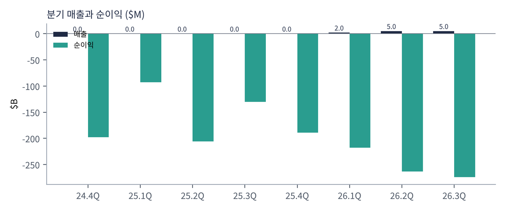
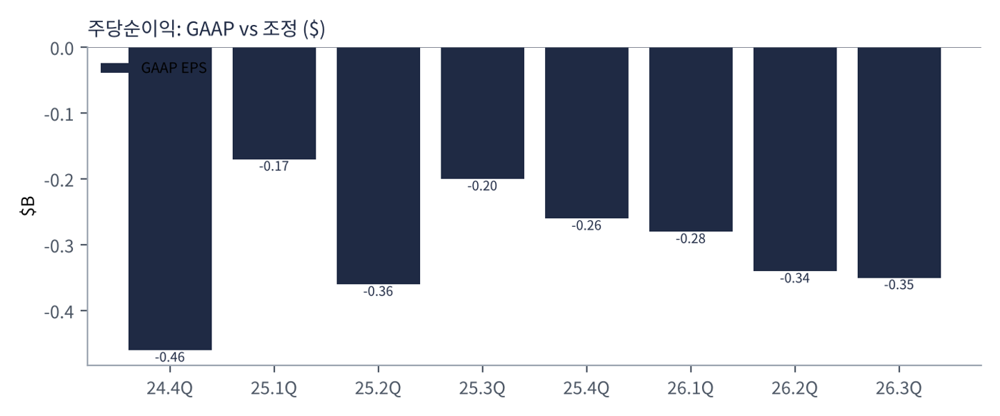
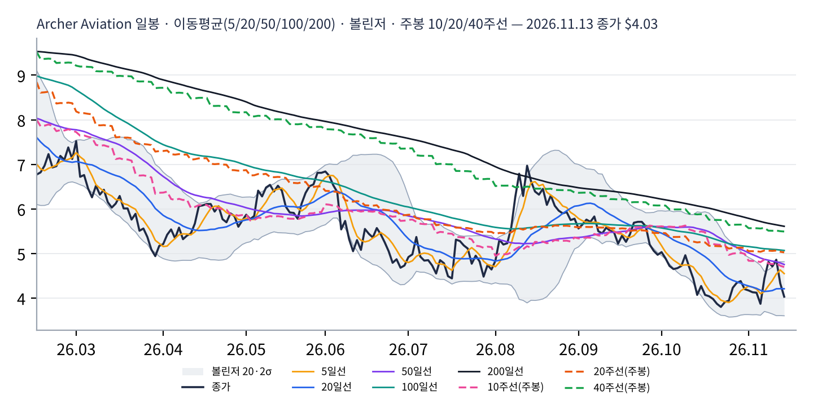
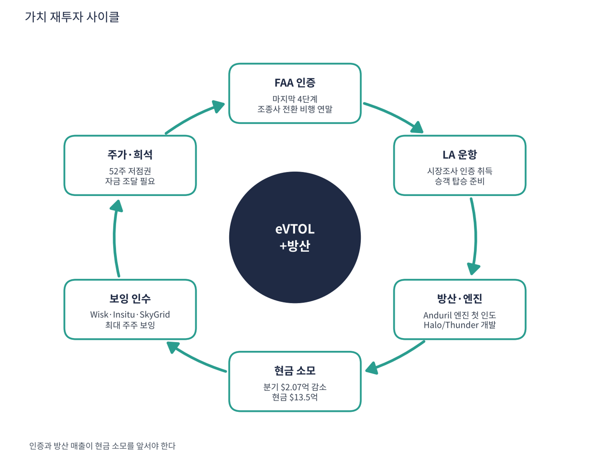

아처는 전기 수직이착륙(eVTOL) 에어택시 '미드나잇'을 개발하는 회사다. 최근에는 Anduril과 하이브리드 방산 기체(Halo/Thunder)도 만든다. 아직 FAA 형식 인증 전이고 매출은 분기 $510만에 그치는데, 분기 현금이 약 $2억씩 줄며 보잉의 Wisk·Insitu·SkyGrid 인수를 앞둔 회사다.
| 항목 | 내용 |
|---|---|
| 종목 | Archer Aviation Inc. (ACHR) · NYSE · 전기 에어택시·방산 · 본사 미국 캘리포니아주 산타클라라 |
| 밸류에이션 | PER 해당 없음(적자) · P/S 286배(스캐너) (11/13 종가 $4.03) |
| 최근 분기(3Q26) | 매출 $510만, 순손실 $2.75억, EPS -$0.35(컨센서스 -$0.25), 조정 EBITDA -$1.79억(가이던스 -$1.7~2.0억) |
| 현금·소모 | 현금·단기투자 $13.5억(전분기 대비 -$2.07억), 영업활동 사용 $1.65억, 설비투자 $0.32억, 비상장사 투자 $0.10억 |
| 4Q26 가이던스 | 매출 $500~600만, 조정 EBITDA -$1.85~2.05억 |
| 인증·운항 | FAA 시장조사 특별 감항증명 취득, LA 비행 시작 준비. 형식 인증은 4단계(마지막)에서 연말 조종사 전환 비행 완료 목표 |
| 다음 실적 | 4Q26 실적: 2027년 3월 10일 예정(트레이딩뷰) |
| 직책 | 인물 | 역할·특징 |
|---|---|---|
| 창업자·CEO | 애덤 골드스타인 | LA 운항을 '가장 중요한 이정표'라 설명, 보잉 인수 마감이 임박했다고 밝힘 |
경영 스타일: '인증·방산·인수를 한꺼번에 밀어붙이며 현금으로 버틴다'. 3Q 영업비용(GAAP)은 $2.94억으로 전분기 $2.84억보다 $1,010만 늘었다. 보잉 인수는 규제 승인 1건만 남았다고 설명했다.
수직으로 뜨고 내린 뒤 날개로 순항한다. 소음이 낮고 도심 단거리 이동을 겨냥한다.
승객 운송과 Anduril 협업 하이브리드 기체, 보잉 자산 인수로 방산 매출을 더한다.
| 분기 | 매출 | 순이익 | EPS | 조정 EPS | 특이 사항 |
|---|---|---|---|---|---|
| 2024.4Q | – | $-1.98억 | -0.46 | – | |
| 2025.1Q | – | $-0.93억 | -0.17 | – | |
| 2025.2Q | – | $-2.06억 | -0.36 | – | |
| 2025.3Q | – | $-1.30억 | -0.20 | – | |
| 2025.4Q | – | $-1.89억 | -0.26 | – | |
| 2026.1Q | $0.02억 | $-2.18억 | -0.28 | – | |
| 2026.2Q | $0.05억 | $-2.63억 | -0.34 | – | |
| 2026.3Q | $0.05억 | $-2.74억 | -0.35 | – | 첫 의미 있는 매출(Anduril 엔진 인도) |


아처는 조정 EPS를 발표하지 않아(조정 EBITDA만 발표) 조정 EPS 열은 '–'이다. 매출은 트레이딩뷰 반올림 값(백만 달러 단위)이라 2·1분기 값은 근사치이고, 4Q24~4Q25는 매출이 거의 없어 '–'로 표시했다. EPS는 스캐너 GAAP 값이며 4Q24는 트레이딩뷰 Reported -0.45와 0.01 차이다.
흐름 요약: 순손실은 4Q24 -$1.98억에서 3Q26 -$2.74억으로 커졌다. 매출은 3Q26에 $510만으로 올랐지만 사업 규모에 비해 미미하다. 영업이익과 분기 설비투자의 8분기 값은 구하지 못해 표에서 뺐다.
| 구분 | 내용 | 비고 |
|---|---|---|
| Anduril 엔진 인도 | 3Q 매출 $510만의 주된 출처(Omen 프로그램 엔진 첫 인도) | 일회성 성격, 반복성 미확인 |
| 미드나잇 에어택시 | 상업 운항 전 | FAA 형식 인증 4단계, 연말 조종사 전환 비행 목표 |
| Halo/Thunder(방산) | 터보샤프트 엔진 시험 시작 | 내년 실기체 비행 시험 목표 |
| 4Q26 전망 | $500~600만 | 인수 완료 전 기준 |
| 보잉 자산 인수(예정) | Wisk·Insitu·SkyGrid, Insitu만 연 매출 $2억 이상 | 가격 미공개, 규제 승인 1건 남음 |
인수가 끝나면 매출 구조가 완전히 달라진다. 현재 숫자만으로는 사업 규모를 평가하기 어렵다.
아처의 방향은 'LA 운항과 방산·F1 파트너십으로 신뢰를 쌓고, 보잉 자산으로 매출 기반을 만드는 것'이다.
| 축 | 최근 움직임 |
|---|---|
| 인증 | 시장조사 특별 감항증명으로 LA 비행, 연말까지 조종사 전환 비행 완료 목표 |
| 방산 | Anduril 협업 Halo/Thunder, 엔진 시험 |
| 인수 | 보잉의 Wisk·Insitu·SkyGrid, 보잉이 최대 주주가 됨 |
| 마케팅 | 포뮬러 1 그랑프리 에어택시 서비스 제휴(다년) |

| 이동평균 | 값 | 종가 대비 | 해석 |
|---|---|---|---|
| 5일선 | $4.55 | -11.4% | 현재가가 아래 |
| 20일선 | $4.21 | -4.3% | 현재가가 아래 |
| 50일선 | $4.75 | -15.2% | 하향 |
| 100일선 | $5.07 | -20.5% | 하향 |
| 200일선 | $5.61 | -28.2% | 현재가가 크게 아래 |
주봉 흐름: 2025년 10월 $11~12 → 11월 $8 → 2026년 1월 고점 $9.3(1/15) → 3월 $6 → 5월 $6.5 → 6~7월 하락 $4.4 → 8월 $5.6~6.6 반등 → 10월 하락 → 11/2 주 저가 $3.6(52주 저점) → 11/9 주 종가 $4.0.
| 규칙 | 기준 | 현재 값 | 신호 |
|---|---|---|---|
| 장기 추세 필터 | 종가 vs 200일선 | $4.03 < $5.61 | 매도 |
| 중장기 교차 | 50일선 vs 200일선 | $4.75 < $5.61 | 매도 |
| 단기 교차 | 20일선 vs 50일선 | $4.21 < $4.75 | 매도 |
| 돈키언 채널 | 55일 고가 $5.96 / 저가 $3.62 | 중간값 $4.79 아래 | 매도 |
| 1개월 모멘텀 | 21거래일 수익률 | -5.6% (기준 $4.27) | 매도 |
| 3개월 모멘텀 | 63거래일 수익률 | -36.9% (기준 $6.39) | 매도 |
| 6개월 모멘텀 | 126거래일 수익률 | -33.4% (기준 $6.05) | 매도 |
| 12개월 모멘텀 | 252거래일 수익률 | -53.4% (기준 $8.65) | 매도 |
| 종합 (8개 평균) | -1.00 | 강한 매도 |
해석: 8개 신호 모두 매도로 -1.00(강한 매도). 14일 ATR $0.39 (9.7%)(가격의 약 10%)로 변동성이 크다.
| 가격 | 무엇이 바뀌나 | 의미 |
|---|---|---|
| $4.27 상향 돌파 | 1개월 모멘텀 | 매도 → 매수(점수 -0.75) |
| $4.79 상향 돌파 | 돈키언 중간값 | 55일 채널 전환 |
| $5.61 상향 돌파 | 200일선 | 장기 추세 필터 전환 |
| $6.05 상향 돌파 | 6개월 모멘텀 | 추가 1개 전환 |
| $6.39 상향 돌파 | 3개월 모멘텀 | 추가 1개 전환 |
| 구분 | 가격대 | 근거 |
|---|---|---|
| 저항 1 | $4.2 ~ 4.3 | 20일선·1개월 모멘텀 |
| 저항 2 | $4.75 ~ 4.8 | 50일선·돈키언 중간값 |
| 저항 3 | $5.07 | 100일선 |
| 지지 | $3.62 | 52주 저점(11/5) |
추세 추종으로는 매수 구간이 아니다. 하락 반전을 노린다면 $3.6~4.1에서 계획 비중의 30%만 진입하고 종가 $3.4(52주 저점 $3.62 아래) 이탈 시 손절한다. 1차 목표 $4.75(50일선), 2차 $5.07(100일선, 내 가정). 희석과 인증 위험이 큰 종목이라 비중을 작게 가져간다.
| 악재 요인 | 내용 | 강도 |
|---|---|---|
| 실적 미달 | 3Q EPS -$0.35로 컨센서스 -$0.25보다 손실이 큼(보도) | 높음 |
| 현금 소모·희석 | 분기 현금 감소 $2.07억, 보잉 인수 신주 규모 미공개 | 높음 |
| 인증·상용화 지연 | 형식 인증 완료와 상용 운항 시점 불확실 | 높음 |
| 밸류에이션 | P/S 286배, 매출 대부분이 일회성 인도 성격 | 중간 |
| 제3자 위험 | 항공기 인도·생산 목표·수익 구조 등 정량 갱신 없음(보도) | 참고 |
| 티커 | 회사 | PER(TTM) | PEG | P/S | EPS 성장(YoY) |
|---|---|---|---|---|---|
| ACHR | 아처 | 적자 | – | 286.29배 | -4% |
| JOBY | 조비 | 적자 | – | 35.11배 | +46% |
| RKLB | 로켓랩 | 적자 | – | 47.39배 | +5% |
모두 트레이딩뷰 GAAP TTM 기준이다. 적자 기업이라 PER·PEG는 없다. 사업 구조가 달라 참고용이다.
ACHR는 현금 $13.5억으로 약 6.5분기를 버티고 그 사이 보잉 인수와 추가 자금 조달이 변수다. 3Q 현금 감소는 $2.07억이다.
| 지표 | 값 | 계산·출처 | 해석 |
|---|---|---|---|
| 현금·단기투자 | $13.5억 | 회사 발표 | 제한 현금 $0.18억 별도 |
| 총차입금 | 약 $2억 | 스캐너 | 구성 미확인, 순현금 약 $11.5억(내 계산) |
| 3Q 현금 감소 | $2.07억 | 회사 발표 | 영업 $1.65억 + 설비 $0.32억 + 투자 $0.10억 |
| TTM 잉여현금흐름 | 약 -$7억 | 스캐너 | |
| TTM EBITDA | 약 -$10억 | 스캐너 | GAAP 기준 |
| 가정 | 분기 현금 감소 | 남은 분기 | 비고 |
|---|---|---|---|
| 3Q 실적 기준 | $2.07억 | 약 6.5분기 | $13.5억 ÷ $2.07억 |
| 4Q 조정 EBITDA 상단 손실 기준 | $2.05억 | 약 6.6분기 | 가이던스 상단 손실로 계산(내 가정) |
| 분기 감소가 $3억으로 늘 때(내 가정) | $3.0억 | 약 4.5분기 | 양산 확대 시나리오 |
| 기준 | 값 | 비고 |
|---|---|---|
| P/S (스캐너) | 286배 | 트레이딩뷰 값, TTM 매출이 약 $1,200만 |
| P/S (4Q 가이던스 중간 $550만 ×4) | 약 145배 | 시총 $32억 ÷ $2,200만(내 계산) |
| EV / 연환산 매출 | 약 90배 | EV ≈ $32억 + $2억 − $13.5억 = $20.5억 ÷ $2,200만 (내 계산) |
| 동종 | JOBY 35, RKLB 47 | 11/13 스캐너 |
해석: 현재 매출로는 가치를 설명할 수 없다. 보잉 Insitu가 연 매출 $2억 이상을 더한다고 회사가 밝혔고(Insitu 현 재무·추정 기준), 인수가 끝나면 매출 구조가 바뀐다. 순현금은 주당 약 $1.45로 주가의 36%다(주식 7.93억 주 기준, 내 계산). 인수 대가와 신주 발행 규모는 공개되지 않았다.
| 지표 | 값 | 판정 |
|---|---|---|
| PER | 해당 없음 | TTM EPS -$1.23 |
| EV / EBITDA | 해당 없음 | TTM EBITDA 약 -$10억(적자) |
| 연환산 3Q 순손실 | 약 -$11억 | $2.75억 ×4 (내 계산) |
| 방식 | PER | EPS 성장률 | PEG | 판정 |
|---|---|---|---|---|
| 트레이딩뷰 (GAAP TTM) | 해당 없음 | -3.9% | – | 적자라 PER 없음, 손실이 오히려 커짐 |
| 조정 EPS 기준 | – | – | 산출 불가 | 조정 EPS를 발표하지 않음, 조정 EBITDA 손실은 전년보다 확대 |
판정: PEG는 산출 불가다(적자). 판단 기준은 인증 일정, 현금 감소 속도, 보잉 인수에 따른 희석이다.

사이클은 인증·시범 운항 → 방산 매출 → 인수로 매출 확대 → 자금 조달 → 재투자다. 현재는 현금 소모가 매출을 크게 앞선다.
| 고리 | 현재 숫자 | 고리 강도 | 약해지는 신호 |
|---|---|---|---|
| ① 인증 | 시장조사 인증 취득, 형식 인증 4단계 | 진행 | 연말 목표 지연 |
| ② 방산 | 엔진 첫 인도, 실기체 시험은 내년 | 초기 | 인도 반복성 |
| ③ 매출 | 3Q $510만, 4Q $500~600만 | 약함 | 인수 지연 |
| ④ 현금 | 현금 $13.5억, 분기 감소 $2.07억 | 약함 | 감소 확대 |
| ⑤ 인수 | 규제 승인 1건 남음 | 보통 | 마감 지연, 희석 |
구조: 강한 고리가 없다. ③④가 약하다.